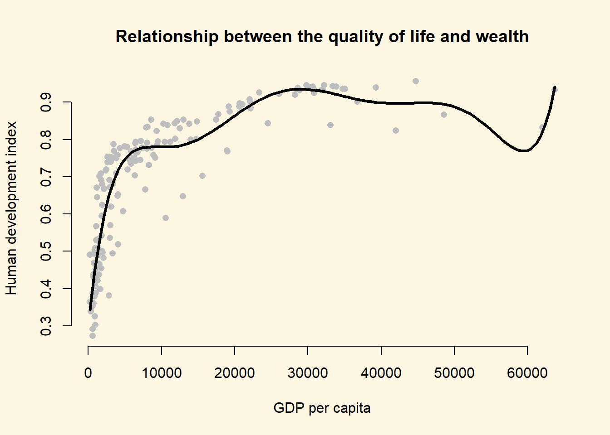

8.2 Solutions
rm(list = ls())8.2.1 Question 1
Using better model, where we included the square of GDP/capita, what is the effect of: a. an increase of GDP/capita from 5000 to 15000? b. an increase of GDP/capita from 25000 to 35000?
# load world data
a <- read.csv("QoG2012.csv")
# rename variables
names(a)[which(names(a)=="undp_hdi")] <- "human_development"
names(a)[which(names(a)=="wbgi_cce")] <- "institutions_quality"
names(a)[which(names(a)=="wdi_gdpc")] <- "gdp_capita"
# drop missings
a <- a[ !is.na(a$gdp_capita), ]
a <- a[ !is.na(a$human_development), ]
a <- a[ !is.na(a$institutions_quality), ]
# create factor again
a$former_col <- factor(a$former_col, labels = c("never colonies", "ex colonies"))
# re-run better modes
better.model <- lm(human_development ~ poly(gdp_capita, 2), data = a)For a. we make two predictions. One, where gdp/capita is 5000 and one where it is 15000.
y_hat1 <- predict(better.model, newdata = data.frame(gdp_capita = 5000))
# predicted quality of life if gdp/capita is 5000
y_hat1 1
0.6443723 y_hat2 <- predict(better.model, newdata = data.frame(gdp_capita = 15000))
# predicted quality of life if gdp/capita is 15000
y_hat2 1
0.8272318 The effect of raising gdp/capita from 5000 to 15000 is the difference between our two predictions (called the first difference).
y_hat2 - y_hat1 1
0.1828595 The quality of life imporves by 0.18 according to our model when we raise gdp/capita from 5000 to 15000. Given that the human development index ranges from 0 - 1 (theoretical range), the effect is extremely large.
For b. we go through the same procedure.
y_hat1 <- predict(better.model, newdata = data.frame(gdp_capita = 25000))
y_hat2 <- predict(better.model, newdata = data.frame(gdp_capita = 35000))
y_hat2 - y_hat1 1
0.04116257 The quality of life improves by only 0.04 when we increase gdp/capita by 10 000 US$. Although, the increase in wealth was 10 000 in both scenarios, the effect is a lot more effective if the society is not already rich.
- You can see that the curve in our quadratic plot curves down when countries become very rich. Speculate whether that results make sense and what the reason for this might be.
8.2.2 Question 2
You can see that the curve in our quadratic plot curves down when countries become very rich. Speculate whether that results make sense and what the reason for this might be.
The downward curve does not make sense because it does not reflect a relationship that we actually observe in our data. The decline in life quality is due to the functional form of the square of gdp. It has to slope down at some point. We would not want to draw the conclusion that increasing wealth at some point leads to decline in the quality of life.
8.2.3 Question 3
Raise GDP/captia to the highest power using the poly() that significantly improves model fit. a. Does your new model solve the potentially artefical down-curve for rich countries? b. Does the new model improve upon the old model? c. Plot the new model.
To answer that question, we raise gdp/capita by one and compare model fit until adding another power does not improve model fit.
# power of 3
m.p3 <- lm(human_development ~ poly(gdp_capita, 3), data = a)
# compare cubic with quadratic using f test
anova(better.model, m.p3) # p < 0.05, so cubic is betterAnalysis of Variance Table
Model 1: human_development ~ poly(gdp_capita, 2)
Model 2: human_development ~ poly(gdp_capita, 3)
Res.Df RSS Df Sum of Sq F Pr(>F)
1 169 1.8600
2 168 1.4414 1 0.41852 48.779 0.00000000006378 ***
---
Signif. codes: 0 '***' 0.001 '**' 0.01 '*' 0.05 '.' 0.1 ' ' 1# power of 4
m.p4 <- lm(human_development ~ poly(gdp_capita, 4), data = a)
# compare models using f test
anova(m.p3, m.p4) # p < 0.05, so new model is betterAnalysis of Variance Table
Model 1: human_development ~ poly(gdp_capita, 3)
Model 2: human_development ~ poly(gdp_capita, 4)
Res.Df RSS Df Sum of Sq F Pr(>F)
1 168 1.4414
2 167 1.2653 1 0.17612 23.244 0.000003191 ***
---
Signif. codes: 0 '***' 0.001 '**' 0.01 '*' 0.05 '.' 0.1 ' ' 1# power of 5
m.p5 <- lm(human_development ~ poly(gdp_capita, 5), data = a)
# compare models using f test
anova(m.p4, m.p5) # p < 0.05, so new model is betterAnalysis of Variance Table
Model 1: human_development ~ poly(gdp_capita, 4)
Model 2: human_development ~ poly(gdp_capita, 5)
Res.Df RSS Df Sum of Sq F Pr(>F)
1 167 1.2653
2 166 1.0193 1 0.24597 40.056 0.000000002213 ***
---
Signif. codes: 0 '***' 0.001 '**' 0.01 '*' 0.05 '.' 0.1 ' ' 1# power of 6
m.p6 <- lm(human_development ~ poly(gdp_capita, 6), data = a)
# compare models using f test
anova(m.p5, m.p6) # p < 0.05, so new model is betterAnalysis of Variance Table
Model 1: human_development ~ poly(gdp_capita, 5)
Model 2: human_development ~ poly(gdp_capita, 6)
Res.Df RSS Df Sum of Sq F Pr(>F)
1 166 1.01935
2 165 0.93283 1 0.086524 15.305 0.0001335 ***
---
Signif. codes: 0 '***' 0.001 '**' 0.01 '*' 0.05 '.' 0.1 ' ' 1# power of 7
m.p7 <- lm(human_development ~ poly(gdp_capita, 7), data = a)
# compare models using f test
anova(m.p6, m.p7) # p < 0.05, so new model is betterAnalysis of Variance Table
Model 1: human_development ~ poly(gdp_capita, 6)
Model 2: human_development ~ poly(gdp_capita, 7)
Res.Df RSS Df Sum of Sq F Pr(>F)
1 165 0.93283
2 164 0.87032 1 0.062509 11.779 0.0007582 ***
---
Signif. codes: 0 '***' 0.001 '**' 0.01 '*' 0.05 '.' 0.1 ' ' 1# power of 8
m.p8 <- lm(human_development ~ poly(gdp_capita, 8), data = a)
# compare models using f test
anova(m.p7, m.p8) # p > 0.05, so new model is worse!Analysis of Variance Table
Model 1: human_development ~ poly(gdp_capita, 7)
Model 2: human_development ~ poly(gdp_capita, 8)
Res.Df RSS Df Sum of Sq F Pr(>F)
1 164 0.87032
2 163 0.86650 1 0.0038174 0.7181 0.398The result is that raising gdp/captia to the power of seven provides the best model fit. We had to manually add powers of gdp to find the answer. For those of you are interested, there is a programmatic way to solve this problem quicker by writing a loop. We show you how to do so below. If you are interested, play around with this but you will not be required to be able to do this (we will not test you on this).
# the initial modle to compare to
comparison.model <- better.model
p <- 0.05 # setting a p-value
power <- 2 # the initial power
# loop until p is larger than 0.05
while(p <= 0.05){
# raise the power by 1
power <- power + 1
# fit the new model with the power raised up by 1
current.model <- lm(human_development ~ poly(gdp_capita, power), data = a)
# run the f-test
f <- anova(comparison.model, current.model)
# extract p value
p <- f$`Pr(>F)`[2]
# comparison model becomes the current model if current model is better
if (p <= 0.05) comparison.model <- current.model
}
screenreg(comparison.model)
====================================
Model 1
------------------------------------
(Intercept) 0.70 ***
(0.01)
poly(gdp_capita, power)1 1.66 ***
(0.07)
poly(gdp_capita, power)2 -1.00 ***
(0.07)
poly(gdp_capita, power)3 0.65 ***
(0.07)
poly(gdp_capita, power)4 -0.42 ***
(0.07)
poly(gdp_capita, power)5 0.50 ***
(0.07)
poly(gdp_capita, power)6 -0.29 ***
(0.07)
poly(gdp_capita, power)7 0.25 ***
(0.07)
------------------------------------
R^2 0.84
Adj. R^2 0.84
Num. obs. 172
RMSE 0.07
====================================
*** p < 0.001, ** p < 0.01, * p < 0.05a. Does your new model solve the potentially artefical down-curve for rich countries?
b. Does the new model improve upon the old model?
c. Plot the new model.We plot the polynomial to answer a) . To do so, we vary gdp/capita from its minimum to the maximum. This is the value of gdp values that we plot on the x axis. We use the predict() function to predict outcomes(\(\hat{Y}\)).
# our sequence of 100 GDP/capita values
gdp_seq <- seq(from = 226, to = 63686, length.out = 100)
# we set our covarite values (here we only have one covariate: GDP/captia)
x <- data.frame(gdp_capita = gdp_seq)
# we predict the outcome (human development index) for each of the 100 GDP levels
y_hat <- predict(m.p7, newdata = x)
# plot
plot(
y = a$human_development,
x = a$gdp_capita,
pch = 16,
frame.plot = FALSE,
col = "grey",
main = "Relationship between the quality of life and wealth",
ylab = "Human development index",
xlab = "GDP per capita"
)
# plot polynomial
lines(x = gdp_seq, y = y_hat, lwd = 3, col = 1)
The model fit improves when we fit a 7th degree polynomial to the data. A seventh degree polynomial is very flexible, it can fit the points well. However, it is very important to remember that we have a sample of data. This sample is subject to sampling variability. That means our sample contains some ideosyncratic aspects that do not reflect the systematic pattern between GDP/captia and the human development index. We call the systematic pattern the “signal” and the random ideosyncratic bit “noise”.
Our 7th degree polynomial is too flexible. It fits the data in our sample too well. We almost certainly fit our model not just to the signal but also to the noise. We want to be parsimonious with our use of polynomials. Without advanced statistics, the general advise is to stay clear of higher degree polynomials. In published articles you often see a quadratic term. You may see a cubic term. Anything above is unusual.
8.2.4 Question 4
Estimate a model where wbgi_pse (political stability) is the response variable and h_j and former_col are the explanatory variables. Include an interaction between your explanatory variables. What is the marginal effect of: a. An independent judiciary when the country is a former colony? b. An independent judiciary when the country was not colonized? c. Does the interaction between h_j and former_col improve model fit?
m1 <- lm(wbgi_pse ~ h_j + former_col, data = a)
screenreg(m1)
=================================
Model 1
---------------------------------
(Intercept) -0.32 *
(0.16)
h_j 0.90 ***
(0.16)
former_colex colonies -0.23
(0.16)
---------------------------------
R^2 0.27
Adj. R^2 0.26
Num. obs. 158
RMSE 0.84
=================================
*** p < 0.001, ** p < 0.01, * p < 0.05In this setting, an interaction does not make sense. We run a model on political stability (dependent variable). Our only two independent variables are the judiciary (h_j) and colonial past (former_col). With these two binary variables only, we have 4 possible combinations:
Judiciary = 0 and Ex colony = 0: \(\beta_0 = -0.32\) Judiciary = 1 and Ex colony = 0: \(\beta_0 + \beta_1 = 0.58\) Judiciary = 0 and Ex colony = 1: \(\beta_0 + \beta_2 = -0.55\) Judiciary = 1 and Ex colony = 1: \(\beta_0 + \beta_1 + \beta_2 = 0.35\)
In the model gives us information on all four possible combinations and we would not interact the dummy variables.
8.2.5 Question 5
Run a model on the human development index (hdi), interacting an independent judiciary (h_j) and control of corruption (corruption_control). What is the effect of control of corruption: a. In countries without an independent judiciary? b. When there is an independent judiciary? c. Illustrate your results. d. Does the interaction improve model fit?
m1 <- lm(human_development ~ institutions_quality * h_j, data = a)
screenreg(m1)
====================================
Model 1
------------------------------------
(Intercept) 0.67 ***
(0.02)
institutions_quality 0.10 ***
(0.02)
h_j 0.05 *
(0.03)
institutions_quality:h_j 0.01
(0.03)
------------------------------------
R^2 0.48
Adj. R^2 0.47
Num. obs. 158
RMSE 0.13
====================================
*** p < 0.001, ** p < 0.01, * p < 0.05- What is the effect of quality of institutions in countries without an independent judiciary?
The effect of institutions quality is \(\beta_1 = 0.10\).
- What is the effect of quality of institutions when there is an independent judiciary?
The effect of institutions quality is \(\beta_1 + \beta_3 = 0.10 + 0.01 = 0.11\).
- Illustrate your results.
# vary institutions quality
summary(a$institutions_quality) Min. 1st Qu. Median Mean 3rd Qu. Max.
-1.69953 -0.81039 -0.28942 -0.01987 0.54041 2.44565 # sequence of quality of institutions
inst.qual <- seq(-1.7, 2.4, length.out = 100)
# set covariates when free judiciary is 0
x1 <- data.frame(institutions_quality = inst.qual, h_j = 0)
# set covariates when free judiciary is 1
x2 <- data.frame(institutions_quality = inst.qual, h_j = 1)
# predictions
y_hat1 <- predict(m1, newdata = x1)
y_hat2 <- predict(m1, newdata = x2)
# free judiciary
a$h_j <- factor(a$h_j, c(0, 1), c("controlled judiciary", "independent judiciary"))
# plot
plot(
y = a$human_development,
x = a$institutions_quality,
pch = 16,
frame.plot = FALSE,
col = a$h_j,
main = "Relationship between the quality of life and quality of institutions",
ylab = "Human development index",
xlab = "Quality of Institutions"
)
# add a legend
legend(
"bottomright", # position fo legend
legend = levels(a$h_j), # what to seperate by
col = a$former_col, # colors of legend labels
pch = 16, # dot type
lwd = 2, # line width in legend
bty = "n" # no box around the legend
)
# free judiciary = 0
lines(x = inst.qual, y = y_hat1, lwd = 3, col = 1)
# free judiciary = 1
lines(x = inst.qual, y = y_hat2, lwd = 3, col = 2)The effect of the quality of institutions does not seem to be conditional on whether a country has a controlled or an independent judiciary. The interaction term is insignificant and we can see that the slope of the lines is quite similar. We would not interpret the effect of the quality of institutions as conditional. It’s substantially similar in both groups.
m1 <- lm(human_development ~ institutions_quality * h_j, data = a)
screenreg(m1)
=========================================================
Model 1
---------------------------------------------------------
(Intercept) 0.67 ***
(0.02)
institutions_quality 0.10 ***
(0.02)
h_jindependent judiciary 0.05 *
(0.03)
institutions_quality:h_jindependent judiciary 0.01
(0.03)
---------------------------------------------------------
R^2 0.48
Adj. R^2 0.47
Num. obs. 158
RMSE 0.13
=========================================================
*** p < 0.001, ** p < 0.01, * p < 0.05- Does the interaction improve model fit?
m_no_interaction <- lm(human_development ~ institutions_quality + h_j, data = a)
anova(m_no_interaction, m1)Analysis of Variance Table
Model 1: human_development ~ institutions_quality + h_j
Model 2: human_development ~ institutions_quality * h_j
Res.Df RSS Df Sum of Sq F Pr(>F)
1 155 2.8102
2 154 2.8061 1 0.0041704 0.2289 0.633The f test confirms that the interaction model does not improve model quality. We fail to reject the null hypothesis that the interaction model does not explain the quality of life better.
8.2.6 Question 6
Clear your workspace and download the California Test Score Data used by Stock and Watson. a. Download ‘caschool.dta’ Dataset b. Draw a scatterplot between avginc and testscr variables. c. Run two regressions with testscr as the dependent variable. c.a. In the first model use avginc as the independent variable. c.b. In the second model use quadratic avginc as the independent variable. d. Test whether the quadratic model fits the data better.
- Load the dataset.
rm(list=ls())
library(foreign) # to load a stata file
a <- read.dta("caschool.dta")- Draw a scatterplot between
avgincandtestscrvariables.
plot(y = a$testscr,
x = a$avginc,
pch = 16,
col = "darkgray",
frame.plot = FALSE,
xlab = "Average family income",
ylab = "Student test scores")- Run two regressions with
testscras the dependent variable. c.a. In the first model useavgincas the independent variable. c.b. In the second model use quadraticavgincas the independent variable.
ca <- lm(testscr ~ avginc, data = a)
cb <- lm(testscr ~ poly(avginc,2), data = a)- Test whether the quadratic model fits the data better.
anova(ca, cb)Analysis of Variance Table
Model 1: testscr ~ avginc
Model 2: testscr ~ poly(avginc, 2)
Res.Df RSS Df Sum of Sq F Pr(>F)
1 418 74905
2 417 67510 1 7394.9 45.677 0.00000000004713 ***
---
Signif. codes: 0 '***' 0.001 '**' 0.01 '*' 0.05 '.' 0.1 ' ' 1The quadratic model improves model fit. The p value is smaller than 0.05.